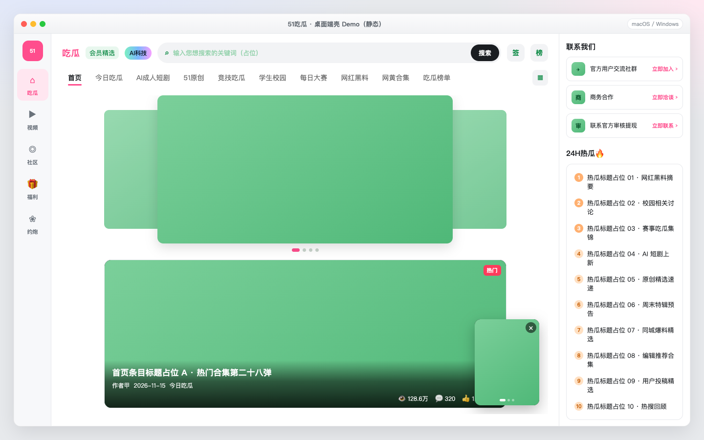

FC-SH-01
壳层 · 主导航
功能逻辑
桌面壳左侧为常驻主导航：顶部品牌标识 + 五个一级模块入口。点击某一项后，中间主内容区切换到该模块根页，导航选中态同步更新，主滚动区回到顶部。右侧栏显隐与内容按当前页类型由 FC-SH-02 决定，主导航本身始终可见。
若用户正停留在某模块的二级页（如文章详情、视频详情、话题页、店铺详情、搜索结果），再点其它主导航项：先离开当前二级页，进入目标模块的根页，再按该模块规则刷新右侧栏。
业务规则
- 导航项固定五项，自上而下顺序与文案：吃瓜、视频、社区、福利、约炮（与 Demo / 上线口径一致）。
- 每项为图标 + 文案；悬停有背景反馈；选中态为高亮背景 + 文案加粗（视觉对齐 Demo）。
- 同一时刻仅一个主导航项为选中态。
- 冷启动 / 打开应用默认落在「吃瓜」，该项为选中态。
- 点当前已选中项：仍回到该模块根页并主滚动区回顶（等价于「回模块首页」），右侧栏按该根页规则展示。
- 榜单、签到、搜索等从各页顶栏或内容区进入，见对应功能块。
页面交互
- 点「吃瓜」：主区展示首页内容流；导航「吃瓜」高亮；主滚动回顶；右侧栏为首页侧栏（FC-SH-02）。
- 点「视频」：主区展示视频列表根页；「视频」高亮；主滚动回顶；右侧栏隐藏。
- 点「社区」：主区展示社区根页（默认推荐子 Tab，见 FC-CM-01）；「社区」高亮；主滚动回顶；右侧栏为社区侧栏。
- 点「福利」：主区展示福利根页；「福利」高亮；主滚动回顶；右侧栏隐藏。
- 点「约炮」：主区展示约炮根页；「约炮」高亮；主滚动回顶；右侧栏隐藏。
- 从二级页点主导航切到其它模块：关闭 / 出栈当前二级页，进入目标根页；原二级页未保存的表单态丢弃（发帖等编辑弹层若仍打开则一并关闭，见 FC-CM-04）。
异常
- 目标模块根页打开失败 → Toast「页面打开失败，请重试」→ 停留在切换前页面，导航高亮回滚到切换前选中项，主滚动位置保持不变。
- 目标模块接口超时或断网 → 进入该根页的空 / 失败态（各模块空态文案见对应功能块）→ 导航高亮仍落到目标项，用户可在该页重试加载。
- 连续快速点击多项 → 以最后一次有效点击为准；中间未完成的切换请求取消，避免主区与高亮错位。
数据流转
客户端路由维护「当前一级模块 + 模块内页面栈」。切换主导航时写入目标模块并清空该模块外的临时二级栈。各模块根页数据在进入时按该模块列表 / 配置接口拉取；右侧栏数据随 FC-SH-02 规则按路由刷新。